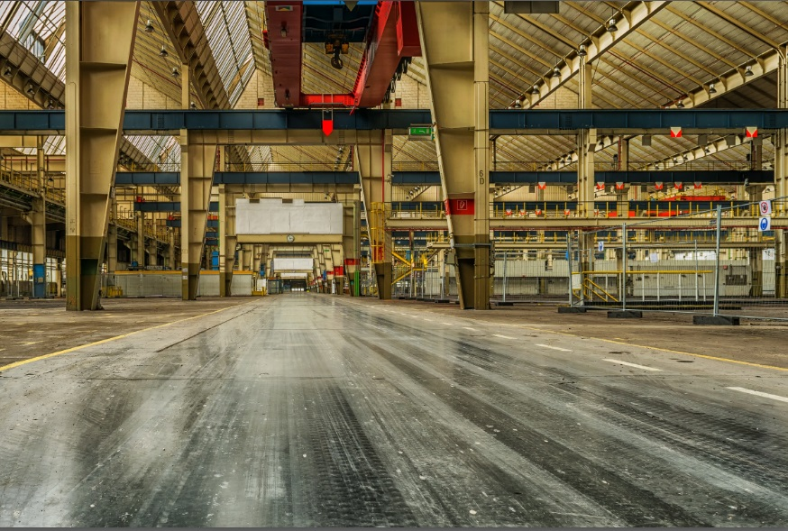

<!--
  Generated template for the ListSpacePage page.

  See http://ionicframework.com/docs/components/#navigation for more info on
  Ionic pages and navigation.
-->
<ion-header>

  <ion-navbar>
    <ion-title>Back</ion-title>
  </ion-navbar>

</ion-header>
  

<ion-content no-padding>
  <h1 padding-left style="padding-left:30px">{{header}}</h1>
  <ion-list style="margin-top:-10px">
      <ion-item *ngFor="let space of spacelists">
        
          <ion-card>
              <button (click)="loadSpaceDetails(space)" no-padding ></button>
              <ion-card-content >
              <ion-row no-padding>
                  <ion-col class="text-left"  >
                    <button ion-button item-center small clear color="facebook" no-padding> <ion-icon name="md-thumbs-up" style="font-size:95%">{{space.likes}} Like</ion-icon></button>
                  </ion-col>
                  <ion-col class="text-center"  > 
                      <button ion-button item-center small clear color="facebook" no-padding><ion-icon name="ios-camera" style="font-size:95%">{{space.comments}} Comment</ion-icon></button>
                  </ion-col>
                  <ion-col class="text-right"  > 
                      <button ion-button small item-center clear color="facebook" no-padding><ion-icon name="md-share-alt" style="font-size:95%">{{space.shares}} Share</ion-icon></button>
                  </ion-col>
              </ion-row>
             </ion-card-content>
              <!-- <ion-item>
                <ion-avatar item-left>
                  
                </ion-avatar>
                <ion-card-header>
                    {{space.spaceType}}
                </ion-card-header>
              
                <ion-card-content>
                    
                    {{space.location}}
                </ion-card-content>
              </ion-item> -->
              </ion-card>
      </ion-item>
  </ion-list>
</ion-content>
<ion-footer style="height: 50px !important;">
  
    <ion-toolbar color="facebook"  no-padding>
        <button style="padding-top:5px;" ion-button small item-center clear (click)="backButtonClick()"> <ion-icon name="md-arrow-round-back" style="color:#FFF"> Back </ion-icon> </button>
      <h3 padding class="title" style="margin-top:5px;float:right;color:#FFF;font-size:10px">
          <ion-icon  name="md-globe" > Copyright 2017</ion-icon>   
      </h3>  
      
    </ion-toolbar>
  </ion-footer>